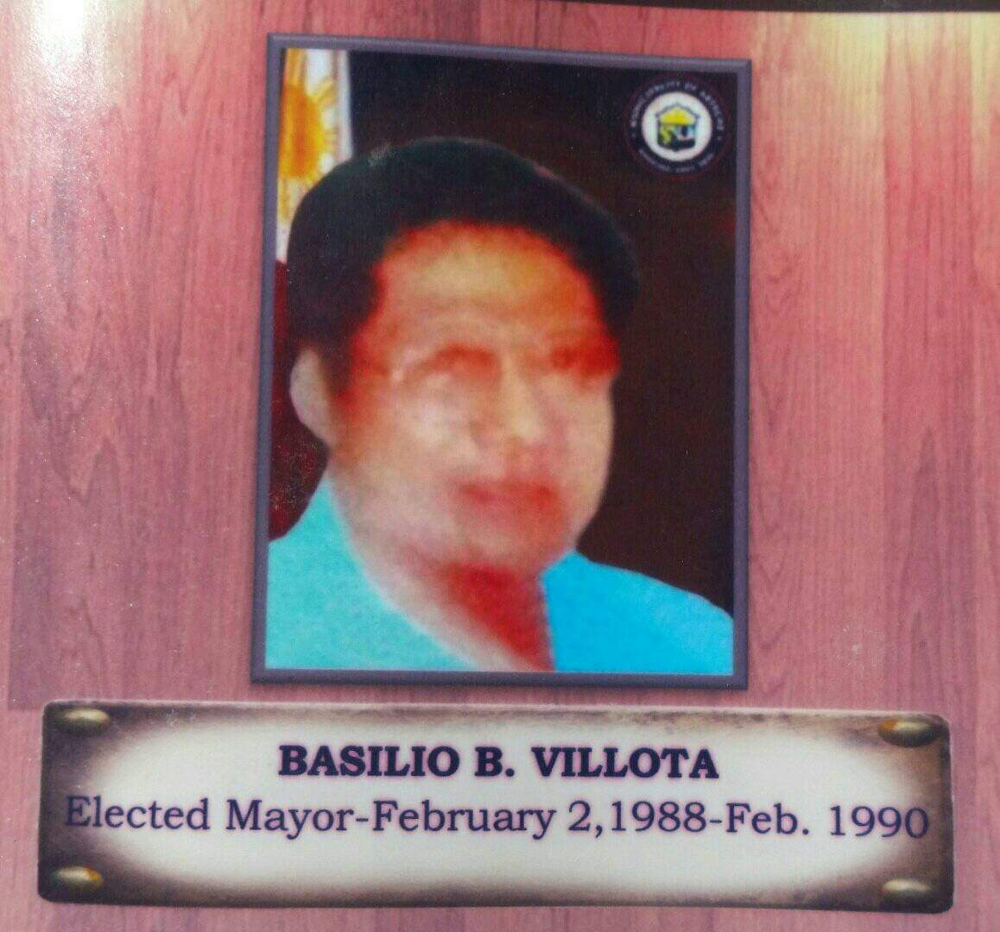

On January 26, 1989 by virtue of a special elections, Mayor Basilio Borata Villota was elected Municipal Mayor. He was sworn into office on February 2, 1989 and served barely for three (3) years until February 10, 1990 as he was stricken with illness.
